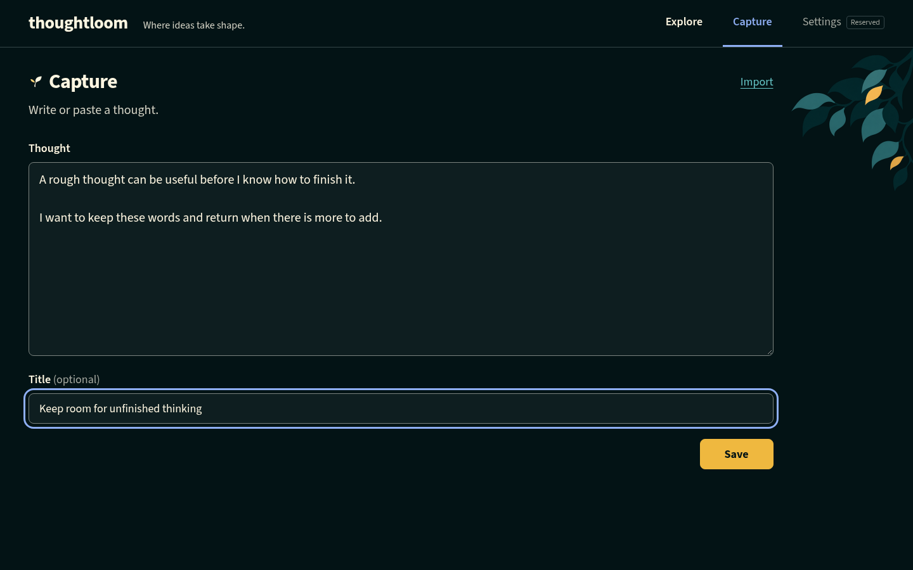
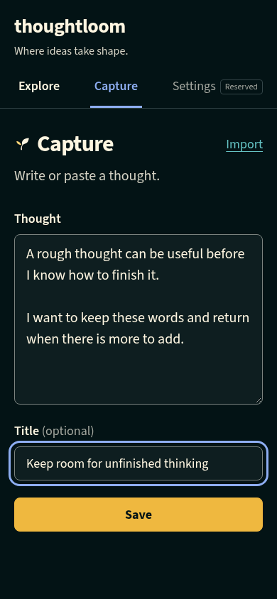
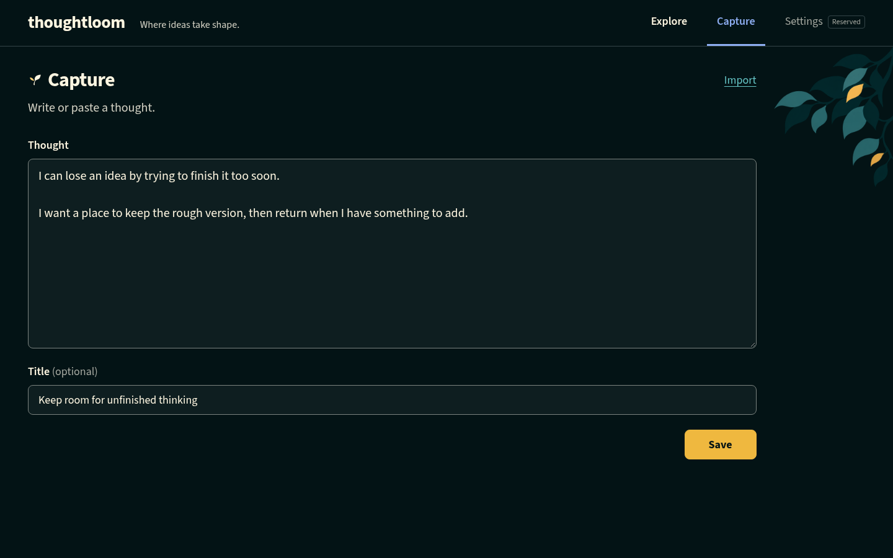
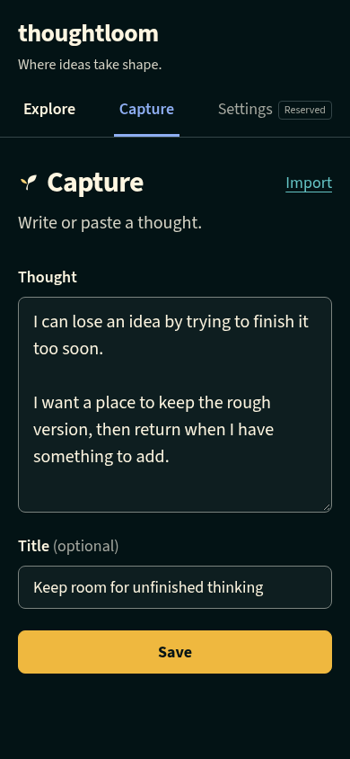
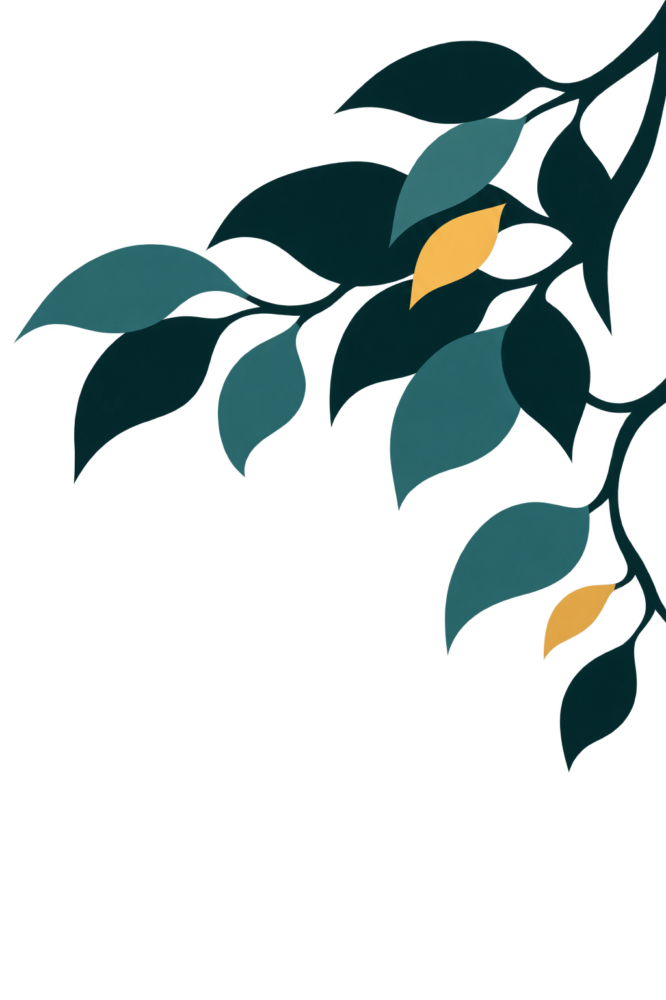

A canopy while you write
Exact canopy, desktop placement and phone omission approved. The user then authorized production and integration. The source-preserving derivative is now integrated into Capture. Designer visual review passed; independent final testing, code review and user runtime acceptance remain pending. All editor text is test-owned, not personal data.
Actual application: desktop and phone




769px narrow gutter · 125% root text · Not-saved state · Geometry and validation receipt


Designer also inspected saving/saved and intermediate-width captures. Artwork stays unchanged, outside the form with 1rem clearance; narrow gutters clip the image rather than narrow the writing area. No positioning fix was made: the exact test rerun cleared layout and exposed a test-selector ambiguity. The independent test author owns the selector/atomic-measurement repair; final full-suite validation is not claimed.
Original approved concept placement




Open static desktop/phone fixture · Saving · Saved · Not saved
The same foliage stays in the same place through those illustrative states. It does not animate, glow in response, grow or signal progress. These original static captures used Capture styles at f04f2fa, not a live app or tested recovery flow; later application changes do not replace the approved evidence.
The exact generated image

The softer treatment was disclosed before exact-image approval. It is now part of the approved source and remains unchanged in production preparation.
Reviewed production derivative
Open exact production derivative · Open derivative placement fixture · Recipe, scope and verification

The designer inspected the derivative against the approved source at display size. Six controlled mechanical tests passed independently before byte-identical runtime promotion. This source/derivative approval is distinct from final runtime acceptance.